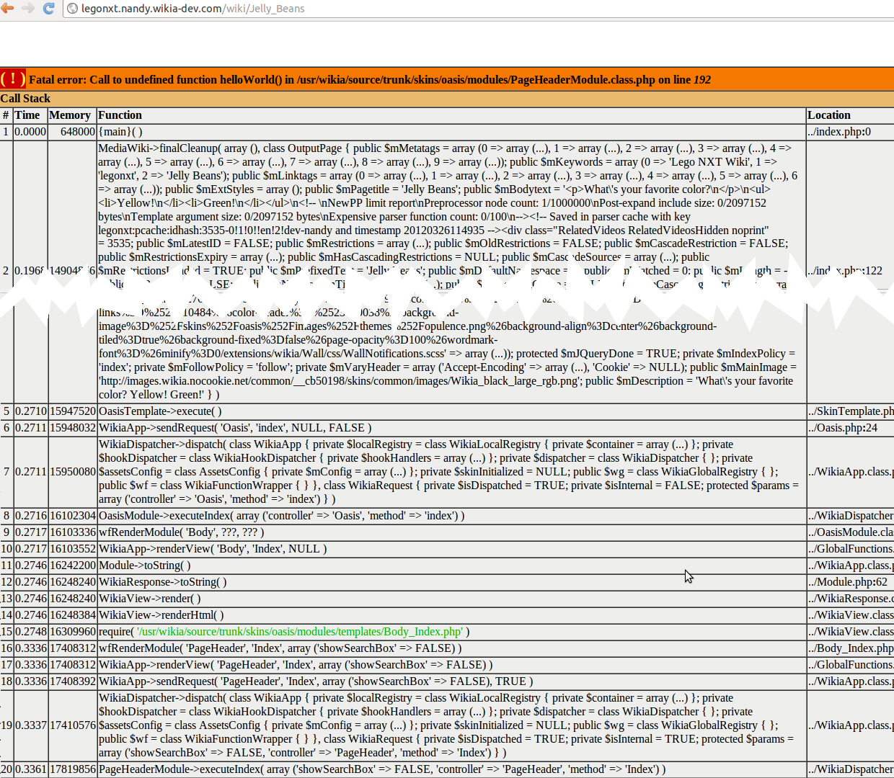
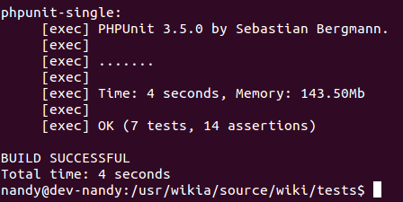

Wprowadzenie do PHP
Andrzej 'nAndy' Łukaszewski, Wikia Inc.
AKAI, 27 marca, 2012
Kim jestem?
- Junior Application Developer @Wikia
- nandy@wikia-inc.com
- @nandy_andy
- http://blog.lukaszewski.it
Plan prezentacji
- Czym jest PHP?
- Zarys historyczny
- Podstawy
- Łatwo, szybko... dobrze?
- Podsumowanie
Czym jest PHP?
- PHP: Hypertext Preprocessor
- język skryptowy oparty na składni C, Java, Perl
- open source
- ogromnie popularny
- głównie wykorzystywany "w rozwoju sieci"
Zarys historyczny
1994
PHP/FI
<!--include /text/header.html-->
<!--getenv HTTP_USER_AGENT-->
<!--ifsubstr $exec_result Mozilla-->
Hey, you are using Netscape!
<!--endif-->
<!--sql database select * from table where user='$username'-->
<!--ifless $numentries 1-->
Sorry, that record does not exist
<!--endif exit-->
Welcome <!--$user-->!
You have <!--$index:0--> credits left in your account.
<!--include /text/footer.html-->
1997 - Zeev Suraski & Andi Gutmans
PHP3
class Title {
//...
/**
* @name Private member variables
* Please use the accessor functions instead.
* @private
*/
//@{
var $mTextform = ''; ///< Text form (spaces not underscores) of the main part
var $mUrlform = ''; ///< URL-encoded form of the main part
var $mDbkeyform = ''; ///< Main part with underscores
//...
var $mNamespace = NS_MAIN;
var $mLength = -1; ///< The page length, 0 for special pages
var $mRedirect = null; ///< Is the article at this title a redirect?
var $mBacklinkCache = null; ///< Cache of links to this title
//@}
PHP4
class WallController extends ArticleCommentsModule {
private $helper;
protected $allowedNamespaces = array();
protected $sortingType = 'index';
const WALL_MESSAGE_RELATIVE_TIMESTAMP = 604800; // relative message timestampt for 7 days (improvement 20178)
public function __construct() {
$this->app = F::App();
$this->allowedNamespaces = $this->app->getLocalRegistry()->get('UserProfileNamespaces');
}
public function init() {
$this->helper = F::build('WallHelper', array());
}
//...
PHP5
- możliwość używania HTTP jako protokół stanowy (ciasteczka, sesje),
- możliwość nawiązania połączenia z bazami danych (mysql_*, PDO),
- możliwość manipulacji na dokumnetach XML,
- możliwość przesyłania plików na serwer,
- możliwość przetwarzania obrazków (GD2, ImageMagick, GMagick),
- możliwość przetwarzania plików dźwiękowych.
PHP16
Podstawy
Podstawowa składnia cz.1
<?php ... ?>
<script language="php"> ... </script>
<? ... ?>
<% ... %>
<p>This is going to be ignored.</p> <?= 'While this is going to be parsed.'; ?> <p>This will also be ignored.</p>
Podstawowa składnia cz.2
<?php
if ($expression) {
?>
<strong>This is true.</strong>
<?php
} else {
?>
<strong>This is false.</strong>
<?php
}
?>
<?php if( $expression ): ?>
<strong>This is true.</strong>
<?php else: ?>
<strong>This is false.</strong>
<?php endif; ?>
Zmienne cz.1
- $variable, $_var, $v4ri5bl3,
- $variable != $VARIABLE
- predefiniowane zmienne i zmienne superglobalne:
- $GLOBALS,
- $_SERVER,
- $_GET,
- $_POST,
- $_FILES,
- $_COOKIE,
- $_SESSION,
- $_REQUEST,
- $_ENV.
Zmienne cz.2
$a = 'welcome';
$$a = 'AKAI'; //echo $welcome; --> AKAI
echo "$a ${$a}"
class Student {
public $sex = 'male';
public $name = 'Steve';
public $surname = 'Kowalsky';
public $class = 'geography';
}
$s = new Student();
$property = 'name';
$propertiesArr = array('sex', 'name', 'surname', 'class');
echo $s->$property . ' ';
echo $s->$propertiesArr[2];
Typy danych cz.1
-
Cztery typy proste:
- boolean
- integer
- float
- string
-
Dwa typy złożone:
- array
- object
-
Dwa typy specjalne:
- resource
- NULL
Typy danych cz.2
<?php <?php // od PHP 5.4
$array = array( $array = [
"foo" => "bar", "foo" => "bar",
"bar" => "foo", "bar" => "foo"
); ];
?> ?>
$array = array(
1 => "a",
"1" => "b",
1.5 => "c",
true => "d",
);
/*array(1) { [1]=> string(1) "d" }*/
Typy danych cz.3
$object = (object) 'AKAI';
echo $object->scalar; //output: AKAI
$arr = (object) array('AKAI', 1, 'WIKIA'); /* object(stdClass)#1 (3) { [0]=> string(4) "AKAI" [1]=> int(1) [2]=> string(5) "WIKIA" } */
Łatwo, szybko... dobrze?
Łatwo i szybko można...
Łatwo i szybko można...

- Linux + Apache + MySQL + PHP
...ale może się to skończyć źle
<?php
$i = 0;
$data = array(
array('Skipper', 'Tom McGrath', 'leader'),
array('Kowalski', 'Jeff Bennett', 'strategist'),
array('Private', 'James Patrick Stuart', 'newbie'),
array('Rico', 'John DiMaggio', ' weapons specialist')
);
echo '<table collspan="1" border="1" cellpadding="1">';
echo '<tr><td>Name</td><td>Voice</td><td>Role</td></tr>';
foreach($data as $penguin) {
echo "<tr><td>$panguin[0]</td><td>$panguin[1]</td>
<td>$panguin[2]</td></tr>&";
}
$i++;
echo '</table>';
?>

{kind=link}
Łatwo i szybko można...
Czy można też zrobić coś dobrze w PHP?
- microframeworki: SILEX Flight
- frameworki:


- PHPUnit
- PHPLint
Xdebug
Testy jednostkowe
class UserIdentityBoxTest extends WikiaBaseTest {
public function testCheckIfDisplayZeroStates($data, $expectedResult) {
$userIdentityBox = new UserIdentityBox(F::app(), $this->getMock('User'), self::TOP_WIKI_LIMIT);
$this->assertEquals($expectedResult, $userIdentityBox->checkIfDisplayZeroStates($data));
}
public function checkIfDisplayZeroStatesDataProvider() {
return array(
//data is an empty array
array(
array(),
true
),
//all "important" data set
array(
array(
'location' => 'Poznań',
'occupation' => 'Programmer',
'birthday' => '1985-07-10',
'gender' => 'Male',
'website' => 'http://www.example.com',
'twitter' => 'http://www.twitter.com/#/test',
'topWikis' => array(1, 2, 3, 123, 4365),
),
false,
),
);
}
//...
}
- 
Czy warto się zainteresować PHP?
{kind=link}
- Wikipedia
- NK
If you’re unaware of the usual beef most developers have with PHP, it tends to revolve around:Kenny Katzgrau (Yahoo, CodeIgniter)
- ugly syntax,
- lack of some necessary features that other languages have (prior to 5.3, namespacing, closures),
- inconsistent function naming, usage, and other quirks,
- mix of procedural and OO-ness,
- the fact that 80-90% of PHP projects are probably gigantic piles of shit.
If you are capable of making wise software design decisions, PHP is a great choice to build your web application with.Kenny Katzgrau (Yahoo, CodeIgniter)
Dziękuję za uwagę! (przydatne linki)
Podręcznik PHP:
http://www.php.net/manual/pl/
meet.php:
http://www.meetphp.pl
Repozytorium MediaWiki:
http://svn.wikimedia.org/doc/files.html
Repozytorium Wikia:
http://trac.wikia-code.com/browser/wikia/trunk
Prezentacja:
http://slides.wikia.net/akai/20120320/phpIntro/